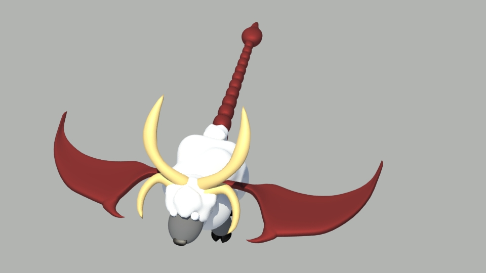
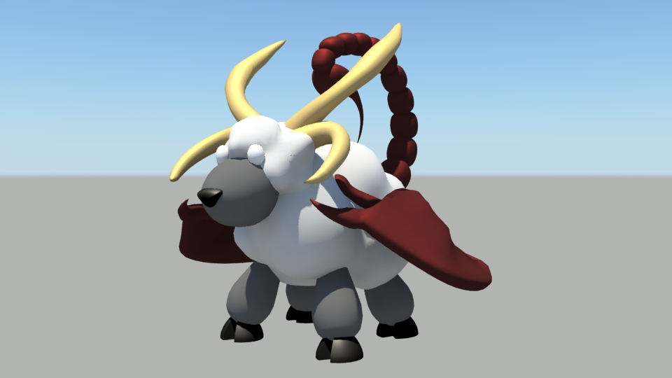
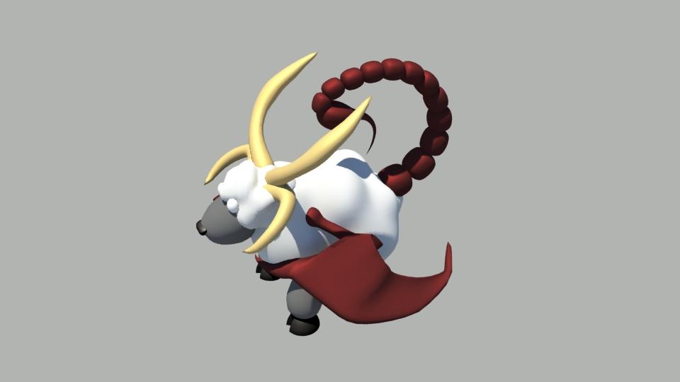

Sheepicore
Finished in March 2014
Reason to create project:
I created this project in free time because I got an inspiration[1].
About project:
Project was created in Maya 2014 (Student licence), rendered by Mental Ray.
Originaly I just wanted to combine sheep with scorpion. When I created clay model, adding just scorpion tail was not enough, but adding other parts of scorpion made it look worse.
Then I decided to borrow dragon wings from manticore and name it Sheepicore. I was also trying to make the wool look as cloudy as possible.
Scene is expected to be used in Maya. Exported .fbx file probably doesn't have all the functions or correct look. (.fbx scene is just for preview or to access models even without Maya)
[1] I was thinking why all mythological creatures (Chimera, Manticore, Gryphon, Ammut, Sphinx) are combined of vicious animals.
Then the idea of combining sheep (Beránek means lamb in Czech language) and scorpion(I was born in November) hit me.
Renders:


